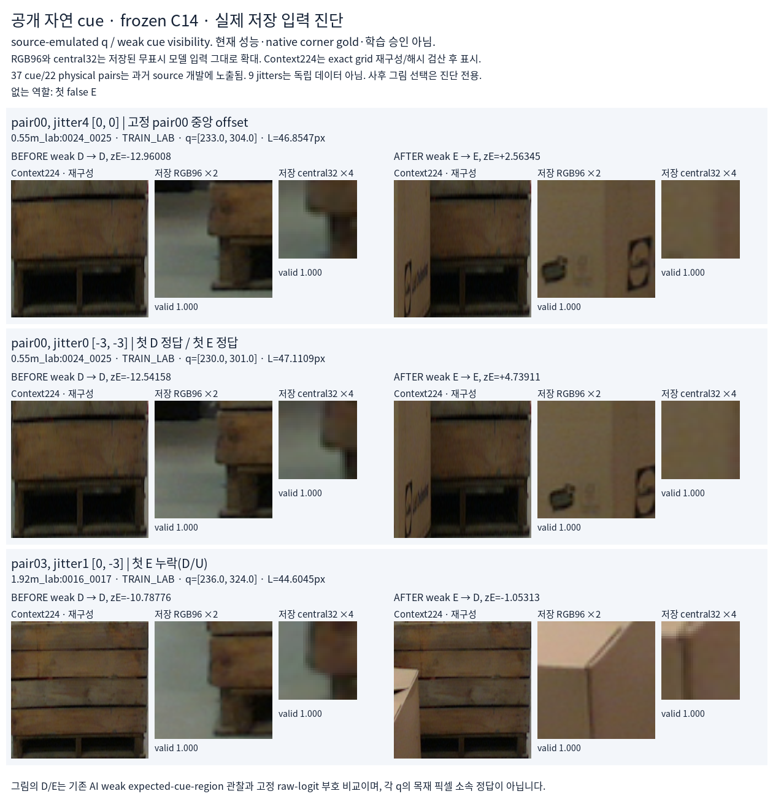

고정 pair00 중앙 offset과 원래 순서의 첫 성공·실패 사례입니다. 없는 유형: 첫 false E. 선택은 prediction seal 이후의 사후 설명용이며 모델·임계값 선택이나 학습에 쓰지 않습니다.
37개 weak cue는22개 physical pair와44개 native RGB에서 왔으며 과거 source 개발에 이미 노출됐습니다. 666행과9개 jitter는 독립 데이터가 아닙니다. 실제 initializer 입력을 보존한 별도 source-emulated q이며 native corner·human gold·현재 성능을 뜻하지 않습니다.

RGB96와 central32는 새로 저장된 실제 모델 입력을 무표시로 표시합니다. Context224는 같은 native RGB·고정 context box를 exact grid로 재구성하고 실제 입력 hash를 확인한 뒤 표시한 이미지입니다. 원본 full frame이나 normalized GPU tensor dump와 구분합니다. 기존 oracle128 진단 이미지는 재사용하지 않습니다.
Weak D/E는 기존 expected structural-cue-region visibility 관찰입니다. q 픽셀의 목재 소속, 정확한 native part 위치 또는 shift마다 독립적인 corner 정답이 아닙니다. 원래 등록·불확실성 한계를 유지합니다.